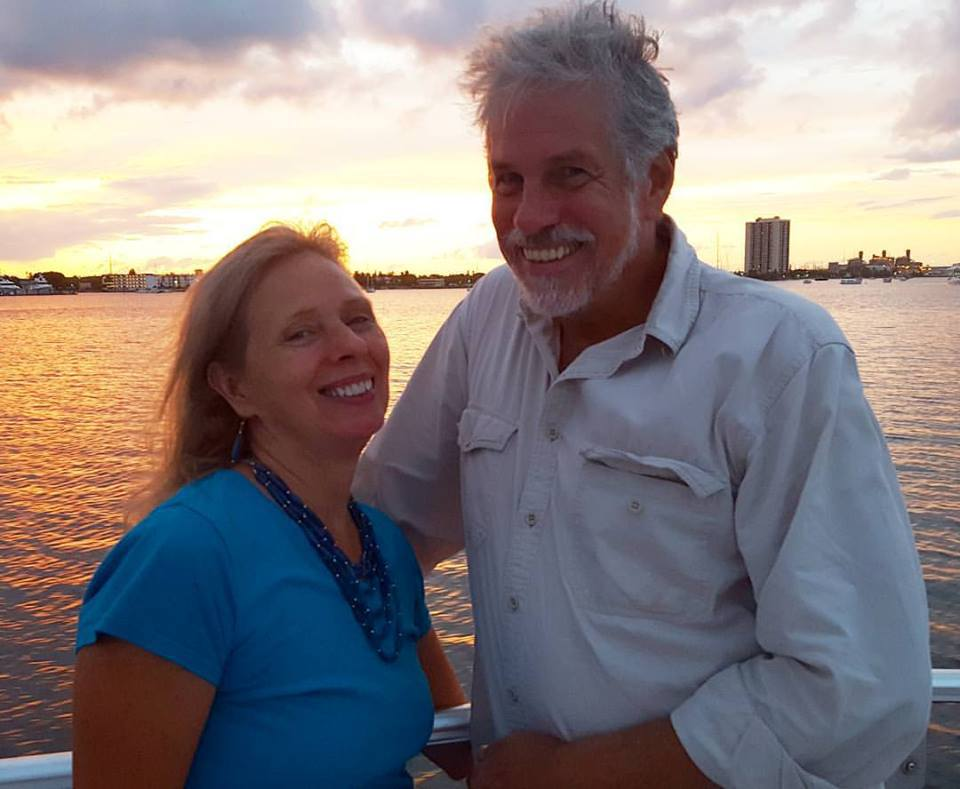

About
Pastor Frank and Leslee Jacobs
Directors and Founding Missionaries
Frank and Leslee first felt the call to the Haitian people in 1982. For 16 years they served on short trips to Haiti, became ham radio operators (to patch phone calls for missionaries), and worked with Haiti missions Stateside.
In 1998 the vision for Hope Alive Clinic was birthed, and the first medical facility was opened in Mariani, Haiti. In 2001, 2004, 2005, and 2009 Hope Alive opened four more clinics throughout Haiti. Three of the five clinics have since been successfully entrusted to their local communities. This enabled Hope Alive to better concentate on our two clinics (Mariani and Tricon, which is near Les Cayes), and to open Solace Hospital for malnourished babies (2016).
In 2014 Frank and Leslee became full-time missionaries. They have three children and four grandchildren.